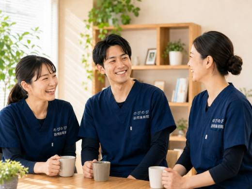

膝が痛むと、その膝をかばうために外へ出ること自体が重荷になります。立ち上がるとき、歩き出しの一歩、階段を下りるとき、そのたびにズキッとくれば、通院もおっくうになりがちです。大阪市都島区で、そんな膝の痛みを抱えるご本人やご家族に向けて、家で受けられる訪問鍼灸マッサージという方法をご紹介します。関節そのものの治療は医療にゆだねつつ、膝まわりの負担をやわらげ、動ける範囲を保つ手立てをお伝えします。
要点から。膝の痛みには、まず整形外科などで診断を受けることが出発点です。すり減った軟骨や変形は元に戻せませんが、膝を支える太ももやお尻、ふくらはぎの張りをゆるめ、血のめぐりを促す補助はできます。医師が必要と認め通院が難しければ、はり・きゅうに医療保険を使えることがあり、自己負担は1割の方で1回およそ395円（総額3,950円）が目安です。要介護認定がなくても、医師の同意があれば利用できます。急な腫れや熱、転倒後に体重をかけられないといったときは、施術より先に受診してください。
都島の暮らしと、膝の痛みという小さなつまずき
都島区は大川と淀川に挟まれ、都島本通の商店街から友渕や毛馬の団地まで、暮らしの気配が濃く残る土地です。谷町線の都島駅や野江内代駅、JR桜ノ宮や京橋へと、どこへ出るにもまず歩くことになります。ところが膝が痛みはじめると、その「まず歩く」がためらいに変わります。善源寺町や大東町までの道のり、集合住宅の外階段、部屋の中での立ち座り。ひとつずつは些細でも、積み重なると外出そのものが億劫になっていきます。
のびのび訪問施術院は、そんな都島区の膝の痛みに、ご自宅まで伺うかたちで向き合っています。通院のために痛む膝を押して出かける必要はありません。住み慣れた部屋で、いつもの椅子や布団の上で受けられることが、施術を続けやすさに変えていきます。
「立つ」「座る」がつらい膝で起きていること
膝の痛みで多いのは、変形性膝関節症にともなうものです。立ち上がりの一歩目がこわばる、階段を下りるときに力が抜ける感じがする、正座がしづらい、膝の内側が腫れぼったい、こうした訴えは、関節のクッションがすり減り、動かせる範囲が少しずつ狭まっていくなかで現れます。可動域が制限されると膝をかばうようになり、太ももの前側の筋肉が使われず落ちていきます。筋力が落ちるとさらに膝が不安定になり、痛みが増して動かなくなる。この悪循環が、都島の集合住宅で一人暮らしをされる高齢の方などでは、外出減少による廃用として静かに進んでしまいます。
大切なのは、痛みそのものだけを見るのではなく、膝の動きと周りの筋肉をどう保つかという視点です。より詳しい説明は膝の痛みで立ち座りがつらい方へのページにまとめています。
ご自宅でできる、動きを保つための施術
訪問では、こわばった膝まわりや太ももの筋肉をていねいにほぐし、血のめぐりをうながしながら、関節を体の様子を見ながら動かしていきます。お灸のじんわりした温かさを添えることもあります。あわせて、寝たまま・座ったままでもできる軽い機能訓練を、その方の膝の状態に合わせてお伝えします。太ももの筋力をこれ以上落とさないこと、動かせる範囲を少しでも保つこと。派手な運動ではなく、毎日続けられる小さな動きの積み重ねが、膝を支える力になります。
ただし、これらは病気そのものを治すものではありません。膝の変形やすり減りが元に戻るわけではなく、効き方には個人差があります。それでも「立ち座りが少し楽になった」「外の空気を吸いに出られた」という日常の小さな変化を、ご一緒に積み重ねていくことを目指しています。
保険と料金のことを、簡単に
膝の痛みへの施術は、それにともなう腰や脚の痛みについて医師が施術を必要と認めた場合に、はり・きゅうの医療保険で行います。ご利用には医療保険（療養費）と医師の同意書が必要ですが、要介護認定は必要ありません。介護保険の区分支給限度額とは別枠のため、デイサービスなどと併用できます。なお、同じ部位について医療保険のリハビリと重なる月は、同時に算定できない点だけご留意ください。
費用は1回の施術が総額3,950円で、自己負担は1割の方でおよそ395円が目安です。週2回で1割の方なら、ひと月おおよそ3,160円ほど。機能訓練は含み、エリア内なら出張費はかからず料金は一律です。これらについて別途の料金はいただきません。仕組みの詳しい内訳は料金はいくら？医療保険の自己負担額と仕組みをご覧ください。
都島区で膝のことを相談したくなったら
都島本通や高倉町、網島、友渕、毛馬のあたりはもちろん、都島駅・野江内代・桜ノ宮・京橋の周辺まで、区内は幅広く伺っています。どこまで来てもらえるか気になる方は対応エリアはどこまで来てもらえる？を、地域全般のご案内は大阪市都島区の訪問鍼灸マッサージをご参照ください。膝の痛みで外に出るのがつらい今こそ、家で受けられる施術という選択肢を、気軽に思い出していただけたらと思います。
よくある質問
都島区にも来てもらえますか？
はい、大阪市都島区へ伺っています。都島本通や友渕町、東野田町、桜宮など区内の広い範囲が対象です。お住まいを電話で教えていただければ、対応できる範囲かその場でお答えします。
変形性膝関節症でも受けられますか？
受けていただけます。ただし、すり減った軟骨や進んだ変形そのものを元に戻すことはできません。膝を支える太ももやお尻、ふくらはぎの張りをゆるめ、めぐりを促す補助が中心です。まず整形外科などで診断を受けたうえでご相談ください。
膝の痛みでも保険が使えますか？
膝まわりの慢性的な痛み・こわばりについて医師が必要と認め、通院が難しければ対象になり得ます。まず医療機関で診てもらいましょう。
要介護認定を受けていなくても頼めますか？
はい。訪問鍼灸は介護保険とは別のしくみで、要介護認定がなくても、医師の同意書があれば利用できます。同意書の手続きはのびのびが引き受けます。
こんなときは受診したほうがよい、という目安はありますか？
膝が急にぱんぱんに腫れる、熱をもって赤くなる、水がたまる、転倒後に体重をかけられない、膝ががくっと崩れる、こうしたときは、まず整形外科などを受診してください。急な変化があるうちは医療での見きわめが先です。
寝たまま受けられますか？
はい。ベッドや布団の上で、寝たまま・座ったままで受けられます。出かける負担はいりません。膝の状態に合わせて、無理のない姿勢で進めます。
費用は移動の距離で変わりますか？
変わりません。別途の出張費（出張料・交通費）はかからず、エリア内はどこでも同額です。お支払いは月ごとにまとめてお願いしています。
ケアマネジャーや施設からの相談もできますか？
はい、歓迎しています。担当のケアマネと連絡を取り合いながら進められますし、施設に入居されている方への訪問にも対応しています。お住まいや施設が対応エリアかどうかも電話でお答えします。

大阪市都島区の訪問鍼灸マッサージ｜住み慣れた家まで、はり・きゅうのケアを届けます
続きを読む
旭区（大阪市）で膝の痛みにお悩みの方へ｜在宅で受ける訪問鍼灸
続きを読む
都島区で五十肩・肩の痛みにお悩みの方へ｜自宅で受ける訪問鍼灸
続きを読む
都島区（大阪市）で脳梗塞の後遺症のケアをお探しの方へ｜訪問鍼灸マッサージ
続きを読む
都島区で坐骨神経痛・腰から足の痛みにお悩みの方へ｜自宅で受けられる訪問鍼灸マッサージ
続きを読む